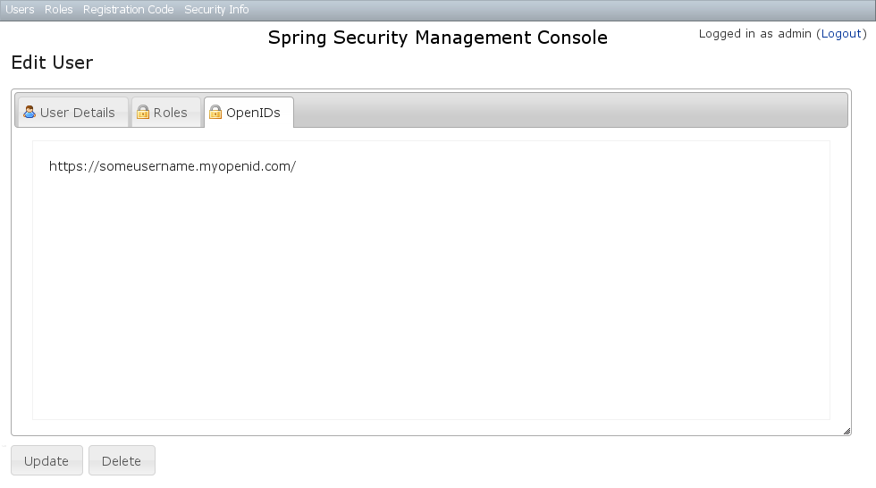

2 User Management - Reference Documentation
Authors: Burt Beckwith
Version: 1.0-RC2
2 User Management
User search
The default action for the User controller is search. By default only the standard fields (username, enabled, accountExpired, accountLocked, and passwordExpired) are available but this is customizable with the grails s2ui-override script - see the section on configuration.You can search by any combination of fields, and the username field has an Ajax autocomplete to assist in finding users. In this screenshot you can see that an email field has been added to the domain class and UI. Leave all fields empty and all checkboxes set at Either to return all users. This example shows a search for usernames containing 'adm' (the search is case-insensitive and the search string can appear anywhere in the username). Results are shown paginated in groups of 10. All of the column headers are clickable and will sort the results by that field:
This example shows a search for usernames containing 'adm' (the search is case-insensitive and the search string can appear anywhere in the username). Results are shown paginated in groups of 10. All of the column headers are clickable and will sort the results by that field:
User edit
After clicking through to the 'admin' user you get to the edit page (there are no view pages): You can update any of the attributes or delete the user. You can see that there's a "Login as user" button here - that us only shown if you're authenticated with a user who is granted
You can update any of the attributes or delete the user. You can see that there's a "Login as user" button here - that us only shown if you're authenticated with a user who is granted ROLE_SWITCH_USER: This allows you to temporarily assume the identity of another user (see the Spring Security Core plugin documentation for more information about switch-user). The "Logged in as ..." information in the top right of the screen will change to show that you're running as another user and provide a link to switch back. The role name is arbitrary and can be changed by overriding
This allows you to temporarily assume the identity of another user (see the Spring Security Core plugin documentation for more information about switch-user). The "Logged in as ..." information in the top right of the screen will change to show that you're running as another user and provide a link to switch back. The role name is arbitrary and can be changed by overriding edit.gsp.OpenIDs
If the OpenID plugin is installed, you can manage users' associated OpenIDs:User creation
You can create new users by going to/user/create or by clicking the Create action in the Users menu.